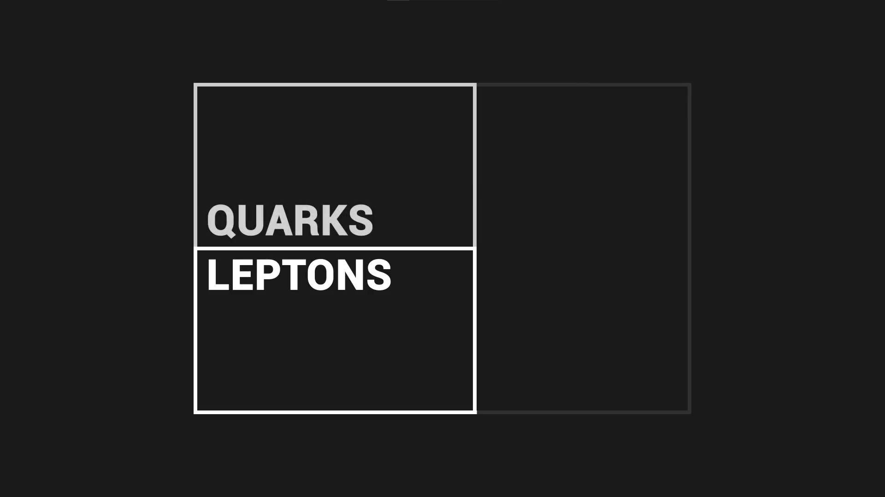

Ստանդարտ մոդելը միավորում է բոլոր մասնիկները, որոնք կազմում են տիեզերքը մեկ տեսության մեջ, տարրական մասնիկները հիմնարարեն ամբողջ տիեզերքի հիմքում, դրանք ամենափոքր մասնիկներն են, դրանց չեն կարող ջարդել կամ բաժանվել,
Ստանդարտ մոդելը բաժանում է այս մասնիկները տարբեր խմբերի․
Տիեզերքը կազմված է նյութից, նյութը հիմնարար է ամեն առարկային և ամեն ինչին ինչ ունի զանգված․
Մասնիկները որոնք կազմումեն նյութ կոչվում են Ֆերմիոներ, Ֆերմիոները բաժանված են 2 խմբերի, Քվարկ և Լեպտոն, Քվարկերը և Լեպտոները գոյություն ունեն 3 տեսակի որը մենք կոչումենք սերունդ, յուրաքանչյուր սերնդի հետ կապված է Քվարկի զույգ և Լեպտոնի զույգ․

- Առաջի սերունդը կազմված է «Վերև» «Ներքև» Քվարկից և Էլեկտրոն և Էլեկտրոն Նեուտրինո Լեպտոներից․ Սա ամենա տարածվաց մասնիկներեն գտնող մեր տիեզերքում․
Երբ «Վերև» «Ներքև» Քվարկերը միացվածեն երեքով, նրանք կազմումեն Պռոտոներ և Նեուտրոներ որոնք ատոմային միջուկի էական մասեր են,
, Էլեկտրոները ևս ներկայեն ատոմում, պտտվելով պռոտոնի և նուտրոնի շուրջ, Էլեկտրոնի բացասական լիցքը չեզոքացնում է Պռոտոնի դրական լիցքը, դարձնելով նյութը չեզոք
Շարժվելով ելեկրական լարի մեջ, էլեկրոները պատասխանատուեն Էլեկրականությանը
Էլեկտրոն նեուտրինային նյութի մասնիկները ամենաշատն են մեր տիեզերքում, Հազար միլլարդավոր քանաքությամբ անցնումեն մեր մարմնի միջով ամեն վարկյան, Իրանք չեն փոխազդում նյութի հետ ինչը նրանց հայտնաբերելը շատ դժվար է դարձնում
- Երկրորդ Սերունդը կազմված է «Չարմ» «Ստրենջ Քուարկ» Քվարկեր, և Մուոն Մուոն Նեուտրինո Լեպտոներ, Այս մասնիկները ունեն զանգվաց ավելի մեծ քան արաջի սերունդի մասնիկներ․
- Երրորդ սերունդը կազմված է «Գագաթ | Top» «Ստորին | Bottom» Քվարկեր, Թաու և Թաու Նեուտրինո Լեպտոներ, Համեմատաց մյուս երկու սերունդի մասնիկներին, սրանք ունեն ամենա մեծ զանգվածը
Երկրորդ և երրորդ սերունդի մասնիկները բավականին հազվադեպեն համեմատած արաջի սերունդի մասնիկներին
Բոլոր նյութական մասնիկները գոյություն ունեն 2 տիպի, երկրորդ տիպը կոչվում է «Հականյութ | Anti-Matter» Տրամադրելով ամեն մասնիկին Հակամասնիկ
Հակամասնիկը ունի նույն բնութագրություն որպես Մասնիկ, բայց պարունակումեն հակառակ լիցք, հակամասնիկները նույն պես ունեն հակառակ գույնային լիցք
Օրինակ։ Պոզիտրոն \( e^+ \) և Էլեկտրոն \( e^- \)
Կան մասնիկներ որոնք նյութի կազմության մաց չեն, որոնք մենք անվանումենք Բոզոներ, Բոզոնը մասնիկ է որը գործում է որպես սուրհանդակ՝ հեռավորության վրա գտնվող մասնիկների միջև փոխազդեցություն ապահովելու համար, Դրանցից 4-ը կոչվումեն Չափիչ բոզոններ, ամեն չափիչ բոզոնը ներկայացնում է ուժ մեր տիեզերքում։
Ֆոտոնը չափիչ բոզոն է կապված է Ելեկտրամագնիսական փոխազդեցությանը, Այն շարժվում է լույսի արագությամբ և առաջացնում է մագնիսականություն և հենց լույս
Գլուոնը պատասխանատու է «Ուժեղ» փոխազդեցությանը, Այս ուժը լինում է մանրադիտակային մասշտաբով և շատ հզոր, այն պահպանում է քվարկներին միասին, որոնք իրենք ձևավորում են պռոտոններ և նեյտրոններ
\( Z^0 \), \( W^+ \), \( W^- \) չափիչ մասնիկներեն որոնք պատասխանատու են թույլ փոխազդեծության, այս ուժը ընկած է այնպիսի երևույթների հիմքում, ինչպիսիք են մասնիկների ռադիոակտիվությունը կամ միջուկային միաձուլումը, որը տեղի է ունենում Արեգակի նման աստղերի ներսում։
Կա մի հատ վերջնական Բոզոն, Հիգս բոզոն, Այնքանել մասնիկ չէ որքան Դաշտ
Հիգս դաշտը տալիս է զանգված մասնիկներին որոնք անցնումեն դրա մեջով, Ինչքան շատ մասնիկը փոխազդում է այդ դաշտի հետ, այդքանել հզոր է դրանց զանգվածը
Բայց այդ մոդելը չի կարող բացատրել ամեն ինչ, Այս մոդելը դեռ չի կարող բացատրել Գրավիտացիան, որը հիմնարար է տիեզերքին․ «Գրավիտոն» բոզոնը տրամադրված է որպես պատասխանատու գրավիտացիայի համար սակայն այն դեռ հիպոթեզե։